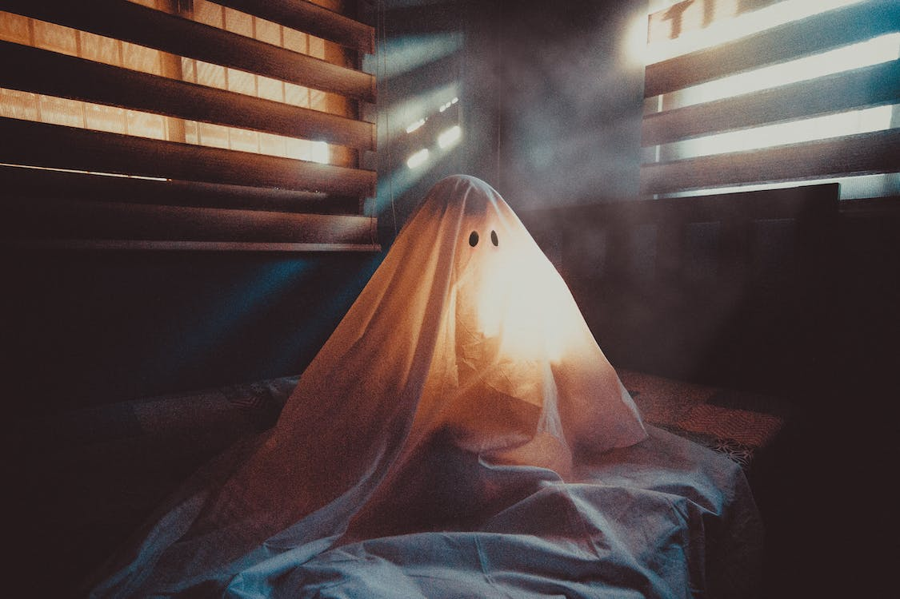

Manuela Chibane, professeure de littérature anglaise, y voit d’abord une fête plutôt récente, pour les enfants, une sorte de carnaval. « Pour les Pays anglo-saxons cela représente une tradition, de même qu’un carnaval hérité des traditions celtiques, où on célébrait les moissons. Les divinités fécondaient la terre et permettaient ainsi de belles récoltes. Cela permettait de fêter ces belles moissons mais aussi de faire venir de nouveaux esprits bénéfiques pour l’année d’après tout en chassant les mauvais esprits. C’est pourquoi on faisait des lanternes, on mettait des fantômes pour leur faire peur car cela coïncide aussi avec la fête des morts. Cela permet aux gens d’exorciser leurs peurs et de se défouler ».
Yann Anton, professeur de philosophie, porte un regard critique sur le côté récent de cette fête, pour une tradition qui n’existait pas en France mais dans les pays anglo-saxons. On peut peut-être y voir « l’expression d’une américanisation du monde, une fascination du reste du monde pour ce modèle américain. Le problème c’est que c’est devenu une fête commerciale, et cela signifie peut-être quelque chose sur notre volonté de nous détourner de la question de la mort à travers le divertissement. Le déguisement permet de se cacher comme au théâtre, derrière une façade, on n’est pas vraiment soi-même, on peut se cacher derrière le personnage que l’on joue pour dévoiler quelque chose que l’on n’ose pas dévoiler dans la vie de tous les jours ».
Frédéric Normand, professeur d’HGGSP, trouve cette fête amusante, même si c’est une « fête commerciale pour faire la jonction jusqu’à Noël, pour permettre de faire la fête en permanence, c’est une concession à l’américanisation pour le continent européen et la France en particulier. Il y a un désir chez les gens, et surtout les jeunes, de cette américanisation, c’est la puissance douce. Il y a des années où on sent que ça ne prend pas vraiment. Les autorités religieuses en Alsace trouvent que ce n’est pas une bonne idée de la fêter, ils ne voient pas cela d’un très bon œil, tout en restant modérés. Cela ne correspond pas trop à l’esprit français car c’est une fête « gothique » et culturellement cela ne parle pas tant que ça aux jeunes Français par rapport aux jeunes Américains et aux jeunes Anglais ».
Jean Rodé, professeur d’histoire-géographie, relève sur le plan de notre société « la vigueur et l’importance qu’a pris cette fête dans des espaces qui n’avaient pas ou très peu cette tradition, ou alors où cette tradition avait été effacée dans le temps par le gros travail qu’a conduit l’Église catholique depuis le Moyen Age, l’effacement de traditions païennes qui étaient antérieures à la Christianisation. Ces pratiques ont survécu dans le monde Anglo-saxon et en particulier en Irlande, le fait qu’elles reviennent aujourd’hui montre la mondialisation des pratiques culturelles. C’est un bel exemple de transmission d’une tradition plutôt irlandaise, qui ensuite s’est largement imposée sur le continent américain, en Amérique du Nord. Cela montre à quel point aussi, l’Amérique du Nord est un centre d’impulsion de certaines pratiques culturelles mondiales et notamment les États–Unis. C’est aussi une fête qui arrive à un moment particulier de l’année et qui correspond à la veille de la Toussaint, qui est une fête chrétienne, mise en place par l’Eglise au Moyen-Age. Aux alentours du XXème ou XXIème siècle, l’Abbaye de Cluny, l’une des grandes abbayes de l’époque, propose de mettre en place la fête de Tous les morts, or ces deux fêtes se suivent ou se chevauchent, ça montre la stratégie de l’Eglise catholique, qui a cherché à recouvrir les pratiques qu’elle considérait comme païennes par ses propres fêtes chrétiennes, de même que Noël est au moment du solstice d’hiver ou la Saint Sylvestre pour le nouvel An. Ainsi, pour Halloween, l’Église a cherché à mettre un verni chrétien sur ce moment où l'on fêtait les morts, verni chrétien qui craquèle aujourd’hui » constate Jean Rodé.